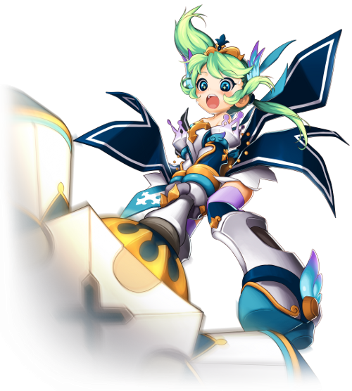

Nascida na pequena ilha onde se localiza o Reino da Luz, próxima ao continente de Vermécia,
Holy Serenity cresceu num ambiente bastante religioso, já que o reino é comandado pelo Papa
Constantino. Por isso desde cedo aprendeu a valorizar a moral e virtudes como bondade e justiça.
Desde pequena, Holy passou a acreditar na justiça como o valor mais importante de todos, capaz
de trazer a paz ao mundo e acabar de vez com todo o mal.
Assim, Holy cresceu para se tornar uma garota pura e cheia de energia, que ama a justiça acima
de tudo. Por viver um pouco isolada do resto do mundo, numa terra de paz e bondade, ela também
pode ser um pouco ingênua de vez em quando. Holy também é um pouquinho teimosa, especialmente
quando acredita estar agindo em nome da justiça. Na verdade, quando está focada em defender essa
virtude, a garota pode se mostrar tão teimosa que não dá ouvidos a mais ninguém, com exceção do
Papa Constantino.
Não foi surpresa para ninguém quando ela se alistou na Ordem dos Paladinos da Luz, para se
tornar uma defensora do papa e da justiça celestial. Afinal Holy possui uma fé inabalável na
justiça e venera as deusas criadoras de Ernas, tendo um profundo desprezo por pessoas malignas e
tudo o que é mal.